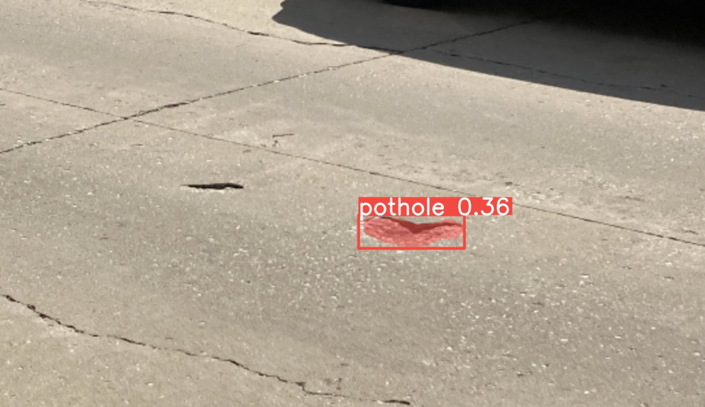

vision · deep learning
Vision-based pothole detection with YOLOv8
Before building the LiDAR detector, I tried cameras. Potholes are the most common negative obstacle, so I trained YOLOv8 segmentation models on several pothole datasets, tuning learning rate, epochs and batch size until they reliably detected and outlined both small and large potholes.


Why it led to the LiDAR approach
The model is only as general as its training data. Potholes are just one kind of negative obstacle, and labelled datasets of trenches, pits and sinkholes are scarce. A geometric LiDAR method needs no training data and covers any hole shape. That became the long-range negative-obstacle detector.
References & credits
- G. Jocher, A. Chaurasia, and J. Qiu, Ultralytics YOLO, v8.0.0, 2023. github.com/ultralytics/ultralytics.
- A. Dhiman and R. Klette, “Pothole detection using computer vision and learning,” IEEE T-ITS, 21(8):3536–3550, 2019.
- S. Ruan, S. Li, C. Lu, and Q. Gu, “A real-time negative obstacle detection method for autonomous trucks in open-pit mines,” Sustainability, 15(1):120, 2022.